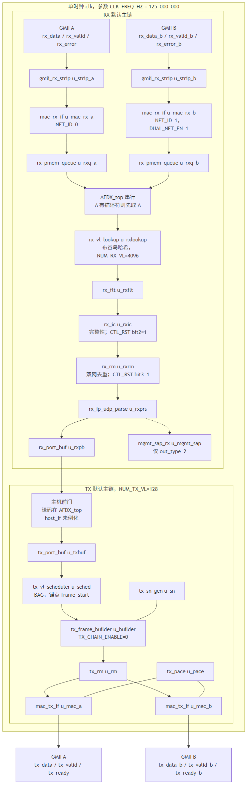

打印稿。现行数字见 doc/submit/00_先读.md。
AFDX 端系统 · 作品总览
> 冻结见 00_先读 · 全量见 00_先读 · 数字来自冻结测试结果
一句话： 基于 FPGA 的 AFDX（ARINC 664 P7）端系统，公开口 GMII A/B，自建测试台验证收发整形、双网冗余、管理面子集与工程指标。
架构

TX：端口 → BAG 调度 → 组帧/SN → 双网 MAC ∥ RX：MAC → 过滤 → IC → RM → 重组 → 主机 ∥ 管理 SAP（SNMP / TFTP·615A / RTC）
五类功能
| 功能 | 关键模块 | 代表测试 | 结果 |
|---|---|---|---|
| 发送调度与整形 | `tx_vl_scheduler` / `mac_tx_if` | T04 / T05* / T27 / T90 | 全量矩阵 PASS |
| 接收过滤与 IC/RM | `rx_vl_lookup` / `rx_ic` / `rx_rm` | T09 / T10 / T12* | PASS（见 metrics） |
| 主机与存储 | `AFDX_top` 前门 / `rx_block_pool` | T01 / T11 / T22 | PASS |
| 管理面子集 | `snmp_lite` / `a615a_tftp` / … | T88 步 5–6；T43 | 子集 PASS |
| 时间同步 | `rtc_sync` | T16a / T88 步 7 | `t16a_pass`=`True` |
四项指标（口径一句话）
| 指标 | 赛题要求 | 实测（metric） | 口径 |
|---|---|---|---|
| 吞吐 | 有效载荷 ≥100 Mbps；RX 去重计一次 | T90 `t90_tx_a_mbps`=`679.188`；`t90_rx_dedup_mbps`=`673.304` | 128 TX 同时活动；IF_MODE=2 |
| 时延 | 工程 ES 贡献 ≪ 2 ms | T89 `t89_es_total_max_ns`=`5976` | commit→SFD 与 SFD→host 之和；非官方 SFD→SFD |
| 抖动 | 同 VL max−min | T42 `t42_jitter_max_us`=`5.016`；T89 `t89_max_jit_ns`=`72` | 场景内对照 40+Σ |
| 规模 | 128 TX / 4096 RX 能力 | `t34p_pass`/`t35p_pass`；T90 128 同时 | 4096 为覆盖，非同时收 |
验证体系
全量见 00_先读 双仿真器一致· 综合后仿真 T88b · 变异 C3 `23`/`28` · 覆盖率双口径（I）· BAG BMC=`F` · 解包 REPLAY
三个创新点
1. 全硬件管理面 — SNMP/TFTP·615A/RTC 在 FPGA 内，无软核。
2. 4096 VL 双表 4-way 流水查表 — 离线摆放 + 常量延迟（T12c）。
3. 验证方法学 — 黄金模型 · 双仿真器 · 变异 · 形式边界 · 单一数字来源。
怎么跑（冒烟）
```powershell
powershell -File sim/run_smoke.ps1
```
详解：`doc/submit/00_先读.md` · 设计/测试正文。